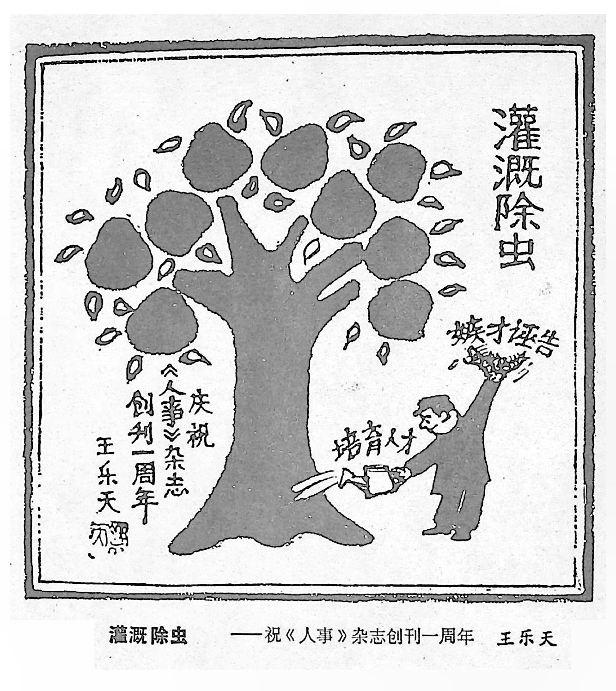

王乐天 《人事》1986年第7期（总第10期），封底
灌溉除虫
Watering and Removing Pests
- Text in the drawing
- 培育人才 / 嫉才诬告 / 庆祝《人事》杂志创刊一周年
Nurturing talent / Envy and false accusation / Celebrating the first anniversary of Renshi magazine - Description
- A man waters a tree (nurturing talent) and plucks off a pest labeled 'envy and false accusation'.
- Note
- Drawn for the first anniversary of 《人事》.
- Artist
- Wang Letian 王乐天
- Published in
- 《人事》1986年第7期（总第10期）, back cover
- Themes
- Talent and its neglect · Envy of talent · Anniversary drawings

Cite
Wang Letian, “灌溉除虫” [Watering and Removing Pests], Renshi (Personnel) 《人事》, 1986, no. 7, back cover.